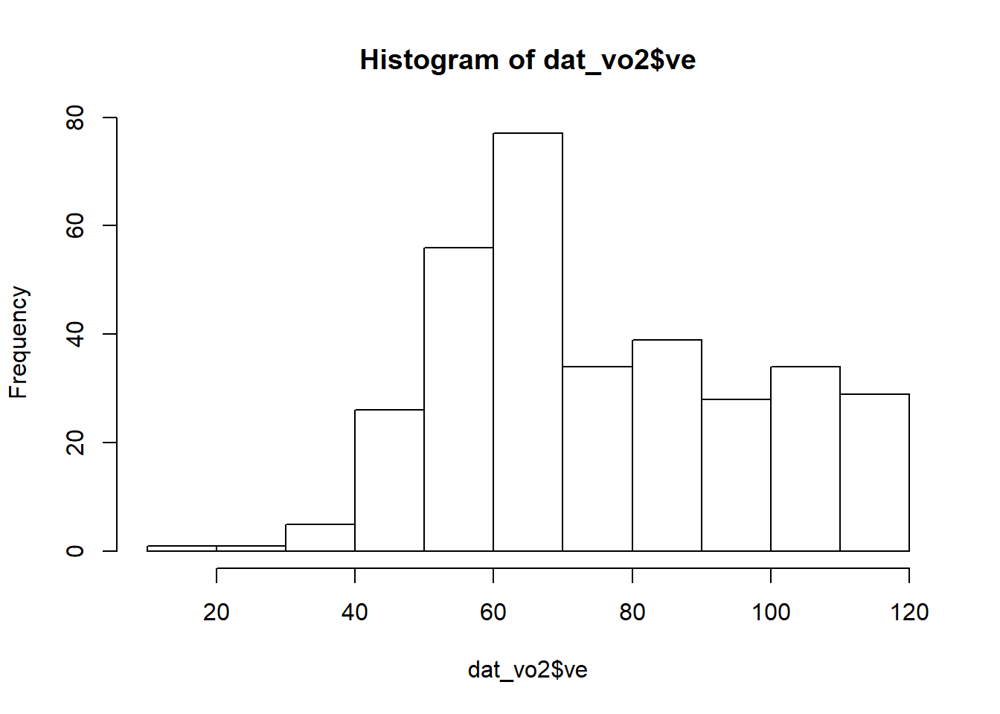
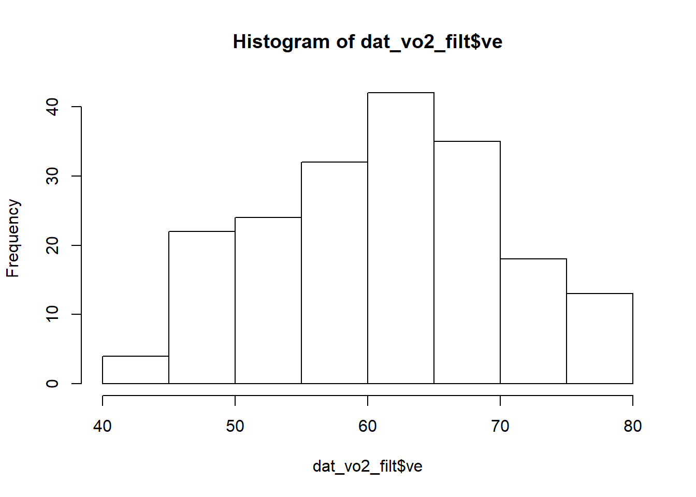

Chapter 6 Data manipulation
Download and load packages
Import data
Let’s load the 3 files from data folder into the workspace again. File one contains the FMS data, another the VO2 raw data from the treadmill test, and lastly the lactate data from the treadmill test.
6.1 Tidy data
You can represent the same underlying data in multiple ways. The example below shows the same data organised in four different ways. This dataset is not the data you loaded, but rather came with the tidyverse package. Each dataset shows the same values of four variables country, year, population, and cases, but each dataset organises the values in a different way.
## # A tibble: 6 x 4
## country year cases population
## <chr> <int> <int> <int>
## 1 Afghanistan 1999 745 19987071
## 2 Afghanistan 2000 2666 20595360
## 3 Brazil 1999 37737 172006362
## 4 Brazil 2000 80488 174504898
## 5 China 1999 212258 1272915272
## 6 China 2000 213766 1280428583## # A tibble: 12 x 4
## country year type count
## <chr> <int> <chr> <int>
## 1 Afghanistan 1999 cases 745
## 2 Afghanistan 1999 population 19987071
## 3 Afghanistan 2000 cases 2666
## 4 Afghanistan 2000 population 20595360
## 5 Brazil 1999 cases 37737
## 6 Brazil 1999 population 172006362
## 7 Brazil 2000 cases 80488
## 8 Brazil 2000 population 174504898
## 9 China 1999 cases 212258
## 10 China 1999 population 1272915272
## 11 China 2000 cases 213766
## 12 China 2000 population 1280428583## # A tibble: 6 x 3
## country year rate
## * <chr> <int> <chr>
## 1 Afghanistan 1999 745/19987071
## 2 Afghanistan 2000 2666/20595360
## 3 Brazil 1999 37737/172006362
## 4 Brazil 2000 80488/174504898
## 5 China 1999 212258/1272915272
## 6 China 2000 213766/1280428583## # A tibble: 3 x 3
## country `1999` `2000`
## * <chr> <int> <int>
## 1 Afghanistan 745 2666
## 2 Brazil 37737 80488
## 3 China 212258 213766## # A tibble: 3 x 3
## country `1999` `2000`
## * <chr> <int> <int>
## 1 Afghanistan 19987071 20595360
## 2 Brazil 172006362 174504898
## 3 China 1272915272 1280428583These are all representations of the same underlying data, but they are not equally easy to use. One dataset, the tidy dataset, will be much easier to work with.
There are three interrelated rules which make a dataset tidy:
- Each variable must have its own column.
- Each observation must have its own row.
- Each value must have its own cell.
Figure 6.1 shows the rules visually.

Figure 6.1: Following three rules makes a dataset tidy: variables are in columns, observations are in rows, and values are in cells.
These three rules are interrelated because it’s impossible to only satisfy two of the three.
In this example, only table1 is tidy. It’s the only representation where each column is a variable.
Why ensure that your data is tidy? There are two main advantages:
There’s a general advantage to picking one consistent way of storing data. If you have a consistent data structure, it’s easier to learn the tools that work with it because they have an underlying uniformity.
There’s a specific advantage to placing variables in columns because most of R functions work with data in the tidy format. That makes transforming tidy data feel particularly natural.
The principles of tidy data seem so obvious that you might wonder if you’ll ever encounter a dataset that isn’t tidy. Unfortunately, however, most data that you will encounter will be untidy. There are two main reasons:
Most people aren’t familiar with the principles of tidy data, and it’s hard to derive them yourself unless you spend a lot of time working with data.
Data is often organised to facilitate some use other than analysis. For example, data is often organised to make entry as easy as possible.
This means for most real analyses, you’ll need to do some tidying. The first step is always to figure out what the variables and observations are. Sometimes this is easy; other times you’ll need to consult with the people who originally generated the data. The second step is to resolve one of two common problems:
One variable might be spread across multiple columns.
One observation might be scattered across multiple rows.
Typically a dataset will only suffer from one of these problems; it’ll only suffer from both if you’re really unlucky! To fix these problems, you’ll need the two most important functions in tidyr: pivot_wider() in Recipe 6.7 and pivot_longer() in Recipe 6.8 below.
6.2 Renaming variables
6.2.1 Problem
The current column names in the dat_vo2 dataset is ugly, and you like to abbreviate it. I dislike excessively using capitals in naming stuff. It is alot of effort to type.
6.2.2 Solution
Create a vector of 8 new names that you can give to the data. The order of new names must be identical to the order of the old names from left to right.
## [1] "Time" "BF" "VO2/kg" "RER" "V'O2" "V'CO2" "V'E" "HR"# New names. Notice the commas and be pedantic about spacing
new_names <- c("time", "bf", "vo2_norm", "rer", "vo2", "vco2", "ve", "hr")
# Give the new names to the old names
colnames (dat_vo2) <- new_names
# This prints the new column names
colnames (dat_vo2) ## [1] "time" "bf" "vo2_norm" "rer" "vo2" "vco2" "ve"
## [8] "hr"6.3 Selecting rows and columns
6.3.1 Problem
You want to remove a specific row or a range of rows, and remove a specific column or a range of columns. See also Recipe 6.12.
6.3.2 Solution
To keep or remove rows based on the row numbers, use slice (), slice_head(), or slice_tail(). In slice (), when you want to keep the row, add that row number. If you want to remove that row number, use a minus sign, -, before the number. If you want to keep or remove a range of numbers, add start:end inside slice(). In slice_tail () and slice_head(), you can keep the bottom, and top, n number of rows, respectively, by adding n = 3 for example inside slice_tail() or slice_head().
To keep based on the column names, use the select () function.
| time | bf | vo2_norm | rer | vo2 | vco2 | ve | hr |
|---|---|---|---|---|---|---|---|
| 00:05 | 37 | 21.4 | 0.93 | 1371 | 1272 | 46 | 119 |
| time | bf | vo2_norm | rer | vo2 | vco2 | ve | hr |
|---|---|---|---|---|---|---|---|
| min | 1/min | ml/ min/kg | ml/min | ml/min | L/min | bpm | |
| 00:10 | 58 | 2.5 | 0.84 | 159 | 133 | 12 | 120 |
| 00:15 | 30 | 23.5 | 0.74 | 1506 | 1110 | 35 | 121 |
| 00:20 | 34 | 22.4 | 0.86 | 1437 | 1229 | 43 | 123 |
| 00:25 | 23 | 15.6 | 0.73 | 1004 | 735 | 22 | 124 |
| 00:30 | 27 | 30.5 | 0.76 | 1960 | 1489 | 48 | 124 |
# This removes the second and third rows
dat_vo2 %>%
slice (-(2:3))%>%
head()%>%
knitr::kable (digits = 2)| time | bf | vo2_norm | rer | vo2 | vco2 | ve | hr |
|---|---|---|---|---|---|---|---|
| min | 1/min | ml/ min/kg | ml/min | ml/min | L/min | bpm | |
| 00:15 | 30 | 23.5 | 0.74 | 1506 | 1110 | 35 | 121 |
| 00:20 | 34 | 22.4 | 0.86 | 1437 | 1229 | 43 | 123 |
| 00:25 | 23 | 15.6 | 0.73 | 1004 | 735 | 22 | 124 |
| 00:30 | 27 | 30.5 | 0.76 | 1960 | 1489 | 48 | 124 |
| 00:35 | 39 | 23.3 | 0.73 | 1499 | 1092 | 38 | 124 |
# This keeps the top six rows
dat_vo2 %>%
slice_head (n = 6) %>%
head()%>%
knitr::kable (digits = 2)| time | bf | vo2_norm | rer | vo2 | vco2 | ve | hr |
|---|---|---|---|---|---|---|---|
| min | 1/min | ml/ min/kg | ml/min | ml/min | L/min | bpm | |
| 00:05 | 37 | 21.4 | 0.93 | 1371 | 1272 | 46 | 119 |
| 00:10 | 58 | 2.5 | 0.84 | 159 | 133 | 12 | 120 |
| 00:15 | 30 | 23.5 | 0.74 | 1506 | 1110 | 35 | 121 |
| 00:20 | 34 | 22.4 | 0.86 | 1437 | 1229 | 43 | 123 |
| 00:25 | 23 | 15.6 | 0.73 | 1004 | 735 | 22 | 124 |
# This keeps the bottom six rows
dat_vo2 %>%
slice_tail (n = 6) %>%
head()%>%
knitr::kable (digits = 2)| time | bf | vo2_norm | rer | vo2 | vco2 | ve | hr |
|---|---|---|---|---|---|---|---|
| 27:05 | 55 | 45.3125 | 1.0689655172413792 | 2900 | 3100 | 112 | 194 |
| 27:10 | 57 | 45.328125 | 1.0341261633919339 | 2901 | 3000 | 111 | 195 |
| 27:15 | 52 | 44.609375 | 1.063047285464098 | 2855 | 3035 | 111 | 194 |
| 27:20 | 59 | 46.5 | 1.0416666666666667 | 2976 | 3100 | 112 | 197 |
| 27:25 | 60 | 45.140625 | 1.0678435444790586 | 2889 | 3085 | 113 | 196 |
| 27:30 | 61 | 46 | 1.0506114130434783 | 2944 | 3093 | 114 | 195 |
# This selects the first, second, and fourth column, and discards the rest
dat_vo2 %>%
select (time, bf, rer) %>%
head()%>%
knitr::kable (digits = 2)| time | bf | rer |
|---|---|---|
| min | 1/min | |
| 00:05 | 37 | 0.93 |
| 00:10 | 58 | 0.84 |
| 00:15 | 30 | 0.74 |
| 00:20 | 34 | 0.86 |
| 00:25 | 23 | 0.73 |
6.4 Convert characters to numeric
6.4.1 Problem
The raw Vo2 treadmill dataset contains predominantly numbers, meaning it is numeric in nature. See also Section 3.4.1. But let us see the type of data that was imported. The str() function provides us with some summary information about the dataframe.
## 'data.frame': 330 obs. of 8 variables:
## $ time : chr " 00:05 " " 00:10 " " 00:15 " " 00:20 " ...
## $ bf : chr "37" "58" "30" "34" ...
## $ vo2_norm: chr "21.4" "2.5" "23.5" "22.4" ...
## $ rer : chr "0.93" "0.84" "0.74" "0.86" ...
## $ vo2 : chr "1371" "159" "1506" "1437" ...
## $ vco2 : chr "1272" "133" "1110" "1229" ...
## $ ve : chr "46" "12" "35" "43" ...
## $ hr : chr "119" "120" "121" "123" ...What you will see is something like this. For the variable bf, you will see $ bf : chr "37" "58" "30" "34" .... chr after the colon indicates that this variable is a character (chr). In R language, a character is anything from a letter, e.g. a, to a word, e.g. word, to even a phrase of sentence, e.g. i hate biomechanics. A character is always enclosed inside a "". Why is R so “stupid”, that it cannot differentiate numbers from words!! Well it is not that R is stupid, but it is that in our original data, characters were mixed with numbers (Figure 6.2).
This was touched on in in Section 6.1, about why this is bad data formatting. In brief, each column should be made up of one type of data. If it is numbers, make it all numbers; characters, all characters. If you have mix, the default is that R treats that column as all characters. The reason why you should not leave numbers as characters is that you cannot do math on it. You cannot add apples and orange can you?
Figure 6.2: The type of data for each class as it was imported.
6.4.2 Solution
Use the mutate() function and the as.numeric function.
# Make all variables from bf to hr numeric, and replace the current data
dat_vo2 <- dat_vo2 %>%
mutate (bf = as.numeric(bf),
vo2_norm = as.numeric(vo2_norm),
rer = as.numeric(rer),
vo2 = as.numeric(vo2),
vco2 = as.numeric(vco2),
ve = as.numeric(ve),
hr = as.numeric(hr))
# Recheck the type of each column
str(dat_vo2)## 'data.frame': 330 obs. of 8 variables:
## $ time : chr " 00:05 " " 00:10 " " 00:15 " " 00:20 " ...
## $ bf : num 37 58 30 34 23 27 39 34 26 27 ...
## $ vo2_norm: num 21.4 2.5 23.5 22.4 15.6 30.5 23.3 29.6 31.9 29.4 ...
## $ rer : num 0.93 0.84 0.74 0.86 0.73 0.76 0.73 0.75 0.8 0.8 ...
## $ vo2 : num 1371 159 1506 1437 1004 ...
## $ vco2 : num 1272 133 1110 1229 735 ...
## $ ve : num 46 12 35 43 22 48 38 49 53 49 ...
## $ hr : num 119 120 121 123 124 124 124 124 124 125 ...6.5 Convert characters to date and time
6.5.1 Problem
The raw dat_vo2 data time variable is a character with ugly white spaces. When you use the str() function on the time column using the $ symbol, you can see that each value looks like " 00:05 ". It means that is a blank before and after the 00:05.
## chr [1:330] " 00:05 " " 00:10 " " 00:15 " " 00:20 " " 00:25 " ...6.5.2 Solution
Use the mutate() function and the as.numeric function. You will learn the mutate () function more in Recipe 6.11.
dat_vo2 <- dat_vo2 %>%
mutate (time = time %>%
str_squish() %>% # function strips any whitespaces
ms() %>% # convert to minutes and seconds
as.period(unit = "sec") %>% # converts entirely to seconds
as.numeric ()) # strips the S symbol to make it a number
# Recheck the type of each column
str(dat_vo2)## 'data.frame': 330 obs. of 8 variables:
## $ time : num 5 10 15 20 25 30 35 40 45 50 ...
## $ bf : num 37 58 30 34 23 27 39 34 26 27 ...
## $ vo2_norm: num 21.4 2.5 23.5 22.4 15.6 30.5 23.3 29.6 31.9 29.4 ...
## $ rer : num 0.93 0.84 0.74 0.86 0.73 0.76 0.73 0.75 0.8 0.8 ...
## $ vo2 : num 1371 159 1506 1437 1004 ...
## $ vco2 : num 1272 133 1110 1229 735 ...
## $ ve : num 46 12 35 43 22 48 38 49 53 49 ...
## $ hr : num 119 120 121 123 124 124 124 124 124 125 ...6.5.3 Discussion
Notice in the function above, I chained a series of steps together, using the pipe, %>%, function. Alternatively, I could do it in separate steps, and we can take a look at how each step changed the appearance of the time variable.
# First, removes whitespaces around the time variable
dat_vo2 %>%
mutate (time = time %>%
str_squish()) %>%
head()%>%
knitr::kable (digits = 2)| time | bf | vo2_norm | rer | vo2 | vco2 | ve | hr |
|---|---|---|---|---|---|---|---|
| 5 | 37 | 21.4 | 0.93 | 1371 | 1272 | 46 | 119 |
| 10 | 58 | 2.5 | 0.84 | 159 | 133 | 12 | 120 |
| 15 | 30 | 23.5 | 0.74 | 1506 | 1110 | 35 | 121 |
| 20 | 34 | 22.4 | 0.86 | 1437 | 1229 | 43 | 123 |
| 25 | 23 | 15.6 | 0.73 | 1004 | 735 | 22 | 124 |
| 30 | 27 | 30.5 | 0.76 | 1960 | 1489 | 48 | 124 |
# Second, convert to minutes and seconds
dat_vo2 %>%
mutate (time = time %>%
str_squish()%>%
ms())%>%
head()%>%
knitr::kable (digits = 2)## Warning: Problem with `mutate()` input `time`.
## i Some strings failed to parse, or all strings are NAs
## i Input `time` is `time %>% str_squish() %>% ms()`.## Warning in .parse_hms(..., order = "MS", quiet = quiet): Some strings failed to
## parse, or all strings are NAs| time | bf | vo2_norm | rer | vo2 | vco2 | ve | hr |
|---|---|---|---|---|---|---|---|
| NA | 37 | 21.4 | 0.93 | 1371 | 1272 | 46 | 119 |
| NA | 58 | 2.5 | 0.84 | 159 | 133 | 12 | 120 |
| NA | 30 | 23.5 | 0.74 | 1506 | 1110 | 35 | 121 |
| NA | 34 | 22.4 | 0.86 | 1437 | 1229 | 43 | 123 |
| NA | 23 | 15.6 | 0.73 | 1004 | 735 | 22 | 124 |
| NA | 27 | 30.5 | 0.76 | 1960 | 1489 | 48 | 124 |
# Third, converts entirely to seconds
dat_vo2 %>%
mutate (time = time %>%
str_squish()%>%
ms() %>%
as.period(unit = "sec")) %>%
head()%>%
knitr::kable (digits = 2)## Warning: Problem with `mutate()` input `time`.
## i Some strings failed to parse, or all strings are NAs
## i Input `time` is `time %>% str_squish() %>% ms() %>% as.period(unit = "sec")`.
## Warning: Some strings failed to parse, or all strings are NAs| time | bf | vo2_norm | rer | vo2 | vco2 | ve | hr |
|---|---|---|---|---|---|---|---|
| NA | 37 | 21.4 | 0.93 | 1371 | 1272 | 46 | 119 |
| NA | 58 | 2.5 | 0.84 | 159 | 133 | 12 | 120 |
| NA | 30 | 23.5 | 0.74 | 1506 | 1110 | 35 | 121 |
| NA | 34 | 22.4 | 0.86 | 1437 | 1229 | 43 | 123 |
| NA | 23 | 15.6 | 0.73 | 1004 | 735 | 22 | 124 |
| NA | 27 | 30.5 | 0.76 | 1960 | 1489 | 48 | 124 |
# Fourth, strips the S symbol to make it a number
dat_vo2 %>%
mutate (time = time %>%
str_squish()%>%
ms() %>%
as.period(unit = "sec") %>%
as.numeric ())%>%
head()%>%
knitr::kable (digits = 2)## Warning: Problem with `mutate()` input `time`.
## i Some strings failed to parse, or all strings are NAs
## i Input `time` is ``%>%`(...)`.
## Warning: Some strings failed to parse, or all strings are NAs| time | bf | vo2_norm | rer | vo2 | vco2 | ve | hr |
|---|---|---|---|---|---|---|---|
| NA | 37 | 21.4 | 0.93 | 1371 | 1272 | 46 | 119 |
| NA | 58 | 2.5 | 0.84 | 159 | 133 | 12 | 120 |
| NA | 30 | 23.5 | 0.74 | 1506 | 1110 | 35 | 121 |
| NA | 34 | 22.4 | 0.86 | 1437 | 1229 | 43 | 123 |
| NA | 23 | 15.6 | 0.73 | 1004 | 735 | 22 | 124 |
| NA | 27 | 30.5 | 0.76 | 1960 | 1489 | 48 | 124 |
6.6 Split Numeric Variable into Categories
6.6.1 Problem
Remember, each stage in VO2 testing is 3:30min long, and you collect data in intervals of 5 sec. You want to split the time variable of the dat_vo2 dataset into chunks of 210 sec, and create a new variable called stage. You will learn the mutate () function more in Recipe 6.11. I will not explain the cut_interval function, other than to say that the length argument is used to specify the range of evenly spaced values to categorize over.
6.6.2 Solution
dat_vo2 <- dat_vo2 %>%
mutate (stage = cut_interval(time, length = 210, labels = FALSE))
dat_vo2 %>%
head()%>%
knitr::kable (digits = 2)| time | bf | vo2_norm | rer | vo2 | vco2 | ve | hr | stage |
|---|---|---|---|---|---|---|---|---|
| 5 | 37 | 21.4 | 0.93 | 1371 | 1272 | 46 | 119 | 1 |
| 10 | 58 | 2.5 | 0.84 | 159 | 133 | 12 | 120 | 1 |
| 15 | 30 | 23.5 | 0.74 | 1506 | 1110 | 35 | 121 | 1 |
| 20 | 34 | 22.4 | 0.86 | 1437 | 1229 | 43 | 123 | 1 |
| 25 | 23 | 15.6 | 0.73 | 1004 | 735 | 22 | 124 | 1 |
| 30 | 27 | 30.5 | 0.76 | 1960 | 1489 | 48 | 124 | 1 |
6.6.3 Discussion
Why chunks of 210 sec? Vo2 data analysis, requires you to find the average values of the last 30s of each treadmill testing stage. Based on your Autumn School lessons, recall that each stage is 3 min 30 sec long or 210 sec. When doing data analysis, there is an amount of pre-planning on how to get the desired end product. There is no magic pill, the more analysis you do, the more short cuts you know.
6.7 Spreading
6.7.1 Problem
You want to make your data wider, in this instance let us look at the dat_fms dataset. You want to have one column indicating the left FMS score, and one indicating the right FMS score. The caveat is that because some tasks in the FMS do not have left and right, we need to remove the tasks in the FMS without a left and right. In this case, we will use the filter() function, which will be discussed in Recipe 6.12.
dat_wide <- dat_fms_sub %>% # original data
pivot_wider(names_from = "side",
values_from = score)
dat_wide%>%
knitr::kable (digits = 2)| task | l | r |
|---|---|---|
| hurdle | 2 | 2 |
| lunge | 3 | 3 |
| leg_raise | 2 | 1 |
| shd_mob | 1 | 2 |
| rot_stab | 2 | 2 |
6.8 Gathering
6.8.1 Problem
You want to make your data longer. In this instance, if you have for example a left and right FMS column and you want to bring all into one column, you use the pivot_longer() function.
6.8.2 Solution
dat_long <- dat_wide %>% # original data
pivot_longer(cols = c("l", "r"),
names_to = "side",
values_to = "score")
dat_long %>%
knitr::kable (digits = 2)| task | side | score |
|---|---|---|
| hurdle | l | 2 |
| hurdle | r | 2 |
| lunge | l | 3 |
| lunge | r | 3 |
| leg_raise | l | 2 |
| leg_raise | r | 1 |
| shd_mob | l | 1 |
| shd_mob | r | 2 |
| rot_stab | l | 2 |
| rot_stab | r | 2 |
6.9 Rename values of a variable
6.9.1 Problem
You want to rename some values, either because it is too long, too short, or for other reasons. In this instance, in the dat_fms dataset, you want to call l, left, and r, right.
6.9.2 Solution
Use the mutate() function and the recode() function. You will learn the mutate () function more in Recipe 6.11.
dat_fms <- dat_fms %>%
mutate (side = recode (side, # the variable name
"l" = "left", # old label = new label
"r" = "right")) # old label = new label
dat_fms%>%
knitr::kable (digits = 2)| task | side | score |
|---|---|---|
| squat | c | 3 |
| hurdle | left | 2 |
| hurdle | right | 2 |
| lunge | left | 3 |
| lunge | right | 3 |
| leg_raise | left | 2 |
| leg_raise | right | 1 |
| shd_mob | left | 1 |
| shd_mob | right | 2 |
| rot_stab | left | 2 |
| rot_stab | right | 2 |
| push_up | c | 1 |
6.10 Creating factors
6.10.1 Problem
You want to create an order in the values of a variable - like small, medium, large.
6.10.2 Solution
6.10.3 Discussion
Why do you need to convert categorical variables to factors? For visualization, the simple reason is that it allows you to control the order in which items appear first to last. Of course, it has important statistical reasons, of which we do not discuss presently.
# Without factor
ggplot(dat_fms) +
geom_col(aes(x = task, y = score, fill = side), position = "dodge", color = "black")
# With factor new levels
ggplot(dat_fms_relvl) +
geom_col(aes(x = task, y = score, fill = side), position = "dodge", color = "black")
Figure 6.3: Barplots of FMS score on original dat_fms (top); and new dat_fms_relvl when with modified the task variable to be a factor, with new levels (bottom).
6.11 Making a new variable
6.11.1 Problem
You want to create a new column which involves some math between columns
6.11.2 Solution
Example, you want to create a column called ratio in the dat_vo2 dataset, by dividing vo2 by vco2.
| time | bf | vo2_norm | rer | vo2 | vco2 | ve | hr | stage | ratio |
|---|---|---|---|---|---|---|---|---|---|
| 5 | 37 | 21.4 | 0.93 | 1371 | 1272 | 46 | 119 | 1 | 1.08 |
| 10 | 58 | 2.5 | 0.84 | 159 | 133 | 12 | 120 | 1 | 1.20 |
| 15 | 30 | 23.5 | 0.74 | 1506 | 1110 | 35 | 121 | 1 | 1.36 |
| 20 | 34 | 22.4 | 0.86 | 1437 | 1229 | 43 | 123 | 1 | 1.17 |
| 25 | 23 | 15.6 | 0.73 | 1004 | 735 | 22 | 124 | 1 | 1.37 |
| 30 | 27 | 30.5 | 0.76 | 1960 | 1489 | 48 | 124 | 1 | 1.32 |
6.11.3 Discussion
There are many math operations you can do including subtraction (-), multiplication (*), addition (+), exponentiation/power to the power of 2 (^2). Let us go crazy and try some random creation of new variables.
dat_vo2_crazy <- dat_vo2 %>%
mutate (vo2_power = vo2^3,# vo2 powered to 3
vco2_mod = vco2/3, # vco2 divied by 3
junk = (vo2+ vco2)/ (hr + bf))# divided the sum of vo2 and vco2, and sum of hr and bf
head(dat_vo2_crazy)%>%
knitr::kable (digits = 2) %>%
kableExtra::scroll_box(width = "100%", height = "100px")| time | bf | vo2_norm | rer | vo2 | vco2 | ve | hr | stage | ratio | vo2_power | vco2_mod | junk |
|---|---|---|---|---|---|---|---|---|---|---|---|---|
| 5 | 37 | 21.4 | 0.93 | 1371 | 1272 | 46 | 119 | 1 | 1.08 | 2576987811 | 424.00 | 16.94 |
| 10 | 58 | 2.5 | 0.84 | 159 | 133 | 12 | 120 | 1 | 1.20 | 4019679 | 44.33 | 1.64 |
| 15 | 30 | 23.5 | 0.74 | 1506 | 1110 | 35 | 121 | 1 | 1.36 | 3415662216 | 370.00 | 17.32 |
| 20 | 34 | 22.4 | 0.86 | 1437 | 1229 | 43 | 123 | 1 | 1.17 | 2967360453 | 409.67 | 16.98 |
| 25 | 23 | 15.6 | 0.73 | 1004 | 735 | 22 | 124 | 1 | 1.37 | 1012048064 | 245.00 | 11.83 |
| 30 | 27 | 30.5 | 0.76 | 1960 | 1489 | 48 | 124 | 1 | 1.32 | 7529536000 | 496.33 | 22.84 |
You can even create a new variable, which reflects the present row number (row_id). This row number reflects the number of 5 sec VO2 windows. If there is 10 sec of data collected, there will be two row numbers, Really quite useful for VO2 analysis and cleaning. Here, inside the mutate() function, I will be using the function row_number() to get the respective number for each row.
| time | bf | vo2_norm | rer | vo2 | vco2 | ve | hr | stage | ratio | row_id |
|---|---|---|---|---|---|---|---|---|---|---|
| 5 | 37 | 21.4 | 0.93 | 1371 | 1272 | 46 | 119 | 1 | 1.08 | 1 |
| 10 | 58 | 2.5 | 0.84 | 159 | 133 | 12 | 120 | 1 | 1.20 | 2 |
| 15 | 30 | 23.5 | 0.74 | 1506 | 1110 | 35 | 121 | 1 | 1.36 | 3 |
| 20 | 34 | 22.4 | 0.86 | 1437 | 1229 | 43 | 123 | 1 | 1.17 | 4 |
| 25 | 23 | 15.6 | 0.73 | 1004 | 735 | 22 | 124 | 1 | 1.37 | 5 |
| 30 | 27 | 30.5 | 0.76 | 1960 | 1489 | 48 | 124 | 1 | 1.32 | 6 |
6.12 Filtering
Filtering is removing rows you do not want and keeping rows you want based on some condition(s). In Recipe 6.3, you learnt the slice() function. That is for really simple filtering. The filter() function you will learn here gives you more flexibility. Filtering deals with keeping or throwing out rows of data. Keeping or throwing out columns of data requires the select() function, which you learnt in Recipe 6.3.
6.12.1 Keep rows you want based on condition
6.12.1.1 Problem
In the dat_fms dataset, you want to keep rows that have side == "left" (i.e. only rows where the side value equals left). Note the ==, double equal sign, instead of the usual =. In this short book, I will not go at length to explain why R is so difficult, only that I ask you to obey the rules of the language.
6.12.1.2 Solution
| task | side | score |
|---|---|---|
| hurdle | left | 2 |
| lunge | left | 3 |
| leg_raise | left | 2 |
| shd_mob | left | 1 |
| rot_stab | left | 2 |
6.12.2 Keep rows based on a numerical range
You want to keep the data when a variable is within a certain window range. Let us use the dat_vo2 dataset. Let us see the range of values of the variable ve.

6.12.2.1 Problem
Say I want to keep rows where 1) ve is less than 80, 2) ve more than 40, and 3) ve is between 40 to 80.
6.12.2.2 Solution
Notice for each graph, how the minimum and maximum values have been clipped off.


# Keep ve between 40 to 80
dat_vo2_filt <- dat_vo2 %>%
filter (ve > 40 & ve < 80)
hist (dat_vo2_filt$ve)
6.12.3 Discussion
filter() works really when you want to throw out or keep rows of data based on some ranges or criteria of the variables you have. When you want to keep rows of data based on the row number, use slice (). See also Recipe 6.3.
6.13 Global summary
6.13.1 Problem
You want to find the total FMS score across all sides and tasks
6.13.2 Solution
In the dat_fms dataset, we want to use the summarize () function.
## total_score
## 1 24I dare you to find an easier way to calculate such scores in one line of code. That is one reason why I use a programming language like R. It is fast!!!
6.13.3 Discussion
We can also go berserk by trying out different summary functions, like mean (), median (), min() (minimum value), max (maximum value).
dat_fms %>%
summarize (total_score = sum (score),
mean_score = mean (score),
median_score = median (score),
min_score = min (score),
max_score = max(score)) %>%
knitr::kable (digits = 2)| total_score | mean_score | median_score | min_score | max_score |
|---|---|---|---|---|
| 24 | 2 | 2 | 1 | 3 |
6.14 Group-by summary
6.14.1 Problem
You want to perform the same summary function for each chunk of group. For example, the FMS is typically scored by taking the lower of the two values of left and right for each task. In side, we have three values, c, left and right. The minimum of c is the same value itself.
6.14.2 Solution
In the dat_fms dataset, we want to use the group_by() and summarize () function.The code below reads as: for each task, tell me the lowest value. For the task of leg raise, the lower of the two values is 1. And you will indeed see that has been created.
## `summarise()` ungrouping output (override with `.groups` argument)| task | lower_score |
|---|---|
| hurdle | 2 |
| leg_raise | 1 |
| lunge | 3 |
| push_up | 1 |
| rot_stab | 2 |
| shd_mob | 1 |
| squat | 3 |
6.14.3 Discussion
Why do you need to learn to create summaries? It is the basis for genering plots easily. Let us look at the dat_vo2 dataset.
Remember in your lessons, the last 30 sec of each 3 min 30 sec complete stage is discarded. That means that I want to throw away the data interval between 3:00 to 3:30 min for every stage.
Thereafter, for the complete stage, the last 30 sec of each 3 min interval is than averaged for further analysis. This means keeping data between 2:30 to 3:00 min of each stage. That corresponds to the last six rows of each stage (i.e. rows 31 to 36 of each stage). Try to think why i selected these row numbers!
For the last stage, there may be the chance that it is incomplete. Based on Kelly’s lesson, you will need to extract the last 30 sec (i.e. last six rows) of that stage.
I than want to average all my variables over these 6 rows per stage.
I should end up with a dataframe that has 8 rows given 8 stages, one for each stage in this example. Notice how I use the summarize_at() function? Because I want to average so many variables, I become lazy. So I specify all variable names without "" inside the vars(). Note I did not type out bf, vo2_norm, rer, vo2, vco2, ve, hr. I used a short cut called :, which reads as from start to end. So bf:hr, means all columns from bf to hr, inclusive.
dat_vo2_summ <- dat_vo2 %>%
group_by(stage) %>% # for each group
mutate (row_id = row_number()) %>%
filter (row_id < 37) %>%
slice_tail (n = 6)%>%
summarise_at (vars(bf:hr), mean)
knitr::kable (dat_vo2_summ,
digits = 2,
caption = "Stage by stage VO2 analysis")| stage | bf | vo2_norm | rer | vo2 | vco2 | ve | hr |
|---|---|---|---|---|---|---|---|
| 1 | 30.67 | 31.97 | 0.87 | 2052.83 | 1777.83 | 55.17 | 136.50 |
| 2 | 34.67 | 34.60 | 0.88 | 2222.17 | 1957.50 | 59.33 | 147.00 |
| 3 | 34.67 | 37.42 | 0.91 | 2401.83 | 2191.33 | 66.67 | 161.33 |
| 4 | 38.00 | 37.83 | 0.95 | 2429.00 | 2312.50 | 71.17 | 172.17 |
| 5 | 44.00 | 41.67 | 1.00 | 2675.00 | 2686.00 | 85.67 | 178.50 |
| 6 | 45.67 | 43.85 | 1.06 | 2813.67 | 2981.17 | 99.83 | 185.83 |
| 7 | 54.50 | 45.50 | 1.09 | 2920.17 | 3195.83 | 110.33 | 192.33 |
| 8 | 57.33 | 45.48 | 1.05 | 2910.83 | 3068.83 | 112.17 | 195.17 |
6.15 Merge two tables together
6.15.1 Problem
You want to combine two tables together, ensuring that each row is linked appropriately. For example, you want to combine your dat_vo2_summ summary data with the dat_vo2_stage table which contains the RPE and blood lactate values.
6.15.2 Solution
Use the inner_join function, with the by key as the common identifier that must be in both dataframes.
| stage | bf | vo2_norm | rer | vo2 | vco2 | ve | hr | speed | rpe | lactate |
|---|---|---|---|---|---|---|---|---|---|---|
| 1 | 30.67 | 31.97 | 0.87 | 2052.83 | 1777.83 | 55.17 | 136.50 | 1 | 10 | 1.0 |
| 2 | 34.67 | 34.60 | 0.88 | 2222.17 | 1957.50 | 59.33 | 147.00 | 2 | 11 | 1.5 |
| 3 | 34.67 | 37.42 | 0.91 | 2401.83 | 2191.33 | 66.67 | 161.33 | 3 | 12 | 1.8 |
| 4 | 38.00 | 37.83 | 0.95 | 2429.00 | 2312.50 | 71.17 | 172.17 | 4 | 13 | 2.5 |
| 5 | 44.00 | 41.67 | 1.00 | 2675.00 | 2686.00 | 85.67 | 178.50 | 5 | 14 | 6.0 |
| 6 | 45.67 | 43.85 | 1.06 | 2813.67 | 2981.17 | 99.83 | 185.83 | 6 | 15 | 7.7 |
| 7 | 54.50 | 45.50 | 1.09 | 2920.17 | 3195.83 | 110.33 | 192.33 | 7 | 16 | 9.0 |
| 8 | 57.33 | 45.48 | 1.05 | 2910.83 | 3068.83 | 112.17 | 195.17 | 8 | 17 | 10.0 |
6.15.3 Discussion
It is common sense, that if we want to join two tables, there must be some rules. First, if we want to join two tables side by side left-right, the number of rows must match. Second, there must be a way the computer knows how to join, much like a key and a keyhole. The key is the column to join by, in this example, stage. In the dat_vo2_summ there is the stage variable with identical number of levels 1-8, and the same variable appears in dat_vo2_stage. You don’t have to worry if after merging, the data is sorted correctly, if you follow these rules.
6.16 Learning check
From your learning check in 5.4, open up your
practice_script.R. You should already have the codes to import thedata/Athlete_1_treadmill.xlsxfile, and label the data calleddat.Rename the columns of
datto be("time", "bf", "vo2_norm", "rer", "vo2", "vco2", "ve", "hr"), respectively. See Recipe 6.2.Remove the first row of the
datdata, as it is useless. See Recipe 6.3.Convert the variable
timeofdatinto numeric seconds, and all other variables to numeric. See Recipe 6.5 and 6.4, respectively.Create a variable called
stage, where each stage represents 3:30 min worth of VO2 data. See Recipe 6.6.For each stage, create a variable called
row_id, which essentially represents the number of 5 sec windows in each stage. See Recipe 6.11 and 6.14.For each stage, remove the data between 3:00 to 3:30min. See Reciple 6.14 and 6.12.2.
For each stage, keep the last six rows of data. See Reciple 6.14 and 6.3.
For each stage, calculate for all variables for the mean of the last six rows of data. See Reciple 6.14 and 6.13.
Save this cleaned data set into the
data/folder calledAthlete_1_treadmill_clean.xlsx. See Reciple 5.3
## Warning: package 'igraph' was built under R version 3.6.2